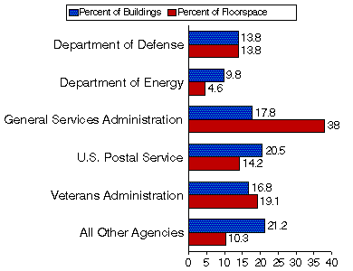

<DESCRIPTION  - CBECS3D.HTM   Federal Buildings Supplemental Survey, 1993 >
<KEYWORDS>
<HTML>

<meta name="description" content="national level data on energy-related issues on buildings in the  commercial sector. ">
<meta name="keywords" content="building square feet, federal buildings, commercial, consumption, energy end uses, energy-use intensities, energy efficiency, SR/EMEU/95-02">

<Title>CBECS 1993 - Federal Buildings Supplement Survey - Detailed Tables</title>


<body bgcolor="#000066" text="#000066" link="#0000ff" vlink="#800080" alink="#ff0000">
<A Name="top"></a> 

<A name="cbecs3d"></a>


<TABLE border=0 cellPadding=0 cellSpacing=0 height=1 width=650>
  <TBODY>
  <TR>

    <td>
      <map name="map"> 
        <area shape="rect" coords="1,15,117,57" href="../../../../../index.html" alt="Energy Information Administration Home Page">
      </map>
    </td>
  </TR>
  <TR>
    <TD align=center bgColor=#000068 width=600 height="18"> 
      <p align="left">&nbsp;<a href="../../../../../index.html" style="TEXT-DECORATION: none"> 
        <FONT class=nodec face="verdana, ms sans serif, arial"  size="-2" color="white" style="font-weight: bold">Home</font></a><FONT class=nodec face="verdana, ms sans serif, arial"  size="-2" color="white" style="font-weight: bold"> 
        &gt;</font> <a href="../../../../../emeu/cbecs/cbec-eu3.html" style="TEXT-DECORATION: none"><font style="font-weight: bold" class="nodec" face="verdana, ms sans serif, arial" color="white" size="-2">Commercial 
        Buildings Home </font></a> <FONT class=nodec face="verdana, ms sans serif, arial"  size="-2" color="white" style="font-weight: bold"> 
        &gt;</font> <a href="cbecs2o.html" style="TEXT-DECORATION: none"><font style="font-weight: bold" class="nodec" face="verdana, ms sans serif, arial" color="white" size="-2">Federal Buildings Publication </font></a> <font style="font-weight: bold" class="nodec" face="verdana, ms sans serif, arial" color="white" size="-2"> 
        &gt;</font> <font style="font-weight: bold" class="nodec" color="#ffff00" face="verdana, ms sans serif, arial" size="-2">Detailed Tables</font></p>
 
      </TD></TR>
  </TBODY></TABLE>

<table width="650" BGcolor="#ffffff" cellpadding="20">
<tr><td width="610" BGcolor="#ffffff">


<CENTER><H2>Detailed Tables</H2></CENTER>

<CENTER><H3>Percent of FBSS Buildings and Floorspace by Selected Agencies, FY

1993</H3>

  <a></A> 
</CENTER>
<P> 
  <CENTER>
    <FONT SIZE=2>&#160;&#160;&#160;&#160; Sources: Energy Information Administration, 
    Energy Markets and End Use, 1993 Federal Buildings Supplemental Survey.</FONT>
  </CENTER>
  <p>
  
     
  
  To View and/or Print Reports (requires Adobe Acrobat Reader) - <A href="http://www.adobe.com/acrobat/readstep.html"><I> 
  Download Adobe Acrobat Reader</I></A><BR>
  If you experience any difficulties, visit our <A

href="http://www.eia.gov/tfaq.html">Technical Frequently Asked Questions.</A> 
  
    

  <left>You have the option of downloading the entire set of tables or selected 
  tables by data item.
<p> <left>Full Set of Tables - <A href="http://www.eia.gov/consumption/commercial/data/archive/pubs/em9502u.pdf">Federal 
  Buildings Supplemental Survey, 1993</A> (file size 770,290 bytes) pages: 123 
  
  <A href="http://www.eia.gov/consumption/commercial/data/archive/pubs/em9502c.pdf">Detailed 
  Table Information</A> (file size 45,044 bytes) pages: 7, includes: 
<UL>

<Li>Population

<Li>Sample and Weighted Totals in Federal Regions 3, 6, and 9

<Li>Regional Level Estimates and Confidence Intervals for Number of Buildings, Floorspace,

and Consumption and Expenditures, Federal Regions 3, 6, and 9

<Li>Table Organization

</UL>


<br>

   


<left>To view tables, click on the main category of interest.  (requires Adobe Acrobat

Reader)<BR>

<left>File sizes range from 20,583 bytes to 107,876 bytes (2 to 18 pages)<P>


<CENTER>

  <table border>
    <caption>
    <B>Table Numbers by Data Item and Number of Buildings or Floorspace</B> 
    </caption>
    <TR> 
      <Th width="379"> <B>Data Item/Category</B></TH>
      <TH colspan=6><B>Table Numbers</B></Th>
    </TR>
    <TR> 
      <TH colspan=7 align="left"><A href="http://www.eia.gov/consumption/commercial/data/archive/pubs/em9502d.pdf"><B> 
        Summary</b></A><B> Table 3.7</B> </TH>
    </TR>
    <TR> 
      <TH colspan=1 rowspan="3">&nbsp; </TH>
      <Th colspan=3><B>Number of Buildings</B></Th>
      <Th

colspan=3 valign="bottom"><B>Floorspace</B></Th>
    </TR>
    <TR> 
      <TH colspan=3 valign="bottom"><B>Federal Region</B></TH>
      <TH

colspan=3><B>Federal Region</B></TH>
    </TR>
    <TR> 
      <TD width="40"

><B>3</B></TD>
      <TD width="40"><B>6</B></TD>
      <TD width="40"><B>9</B></TD>
      <TD width="29"

><B>3</B></TD>
      <TD width="28"><B>6</B></TD>
      <TD width="30"><B>9</B></TD>
    </TR>
    <TR> 
      <TD><A href="http://www.eia.gov/consumption/commercial/data/archive/pubs/em9502e.pdf"><B>Energy 
        Sources</b></a></TD>
      <TD>3.8</TD>
      <TD>3.8</TD>
      <TD>3.8</TD>
      <TD>3.9</TD>
      <TD>3.9</TD>
      <TD>3.9</TD>
    </TR>
    <TR> 
      <TD colspan=7 ><B>Equipment</B></TD>
    </TR>
    <TR> 
      <TD><A href="http://www.eia.gov/consumption/commercial/data/archive/pubs/em9502f.pdf"><B>-- 
        Heating Equipment</b></a></TD>
      <TD>3.10</TD>
      <TD>3.11</TD>
      <TD>3.12</TD>
      <TD>3.13</TD>
      <TD>3.14</TD>
      <TD>3.15</TD>
    </TR>
    <TR> 
      <TD><A href="http://www.eia.gov/consumption/commercial/data/archive/pubs/em9502g.pdf"><B>-- 
        Cooling Equipment</b></a></TD>
      <TD>3.16</TD>
      <TD>3.17</TD>
      <TD>3.18</TD>
      <TD>3.19</TD>
      <TD>3.20</TD>
      <TD>3.21</TD>
    </TR>
    <TR> 
      <TD><A href="http://www.eia.gov/consumption/commercial/data/archive/pubs/em9502h.pdf"><B>-- 
        Refrigeration Equipment</b></a></TD>
      <TD>3.22</TD>
      <TD>3.23</TD>
      <TD>3.24</TD>
      <TD>3.22</TD>
      <TD>3.23</TD>
      <TD>3.24</TD>
    </TR>
    <TR> 
      <TD><A href="http://www.eia.gov/consumption/commercial/data/archive/pubs/em9502i.pdf"><B>-- 
        Water Heating Equipment</b></a></TD>
      <TD>3.25</TD>
      <TD>3.26</TD>
      <TD>3.27</TD>
      <TD>3.25</TD>
      <TD>3.26</TD>
      <TD>3.27</TD>
    </TR>
    <TR> 
      <TD><A href="http://www.eia.gov/consumption/commercial/data/archive/pubs/em9502j.pdf"><B>-- 
        Lighting Equipment</b></a></TD>
      <TD>3.28</TD>
      <TD>3.29</TD>
      <TD>3.30</TD>
      <TD>3.31</TD>
      <TD>3.32</TD>
      <TD>3.33</TD>
    </TR>
    <TR> 
      <TD colspan=7 ><B>Conservation/Energy Management Features</B></TD>
    </TR>
    <TR> 
      <TD><A href="http://www.eia.gov/consumption/commercial/data/archive/pubs/em9502k.pdf"><B> 
        -- Energy Conservation Features</b></a></TD>
      <TD>3.34</TD>
      <TD>3.35</TD>
      <TD>3.36</TD>
      <TD>3.34</TD>
      <TD>3.35</TD>
      <TD>3.36</TD>
    </TR>
    <TR> 
      <TD><A href="http://www.eia.gov/consumption/commercial/data/archive/pubs/em9502l.pdf"><B>-- 
        Energy Management Practices</b></a></TD>
      <TD>3.37</TD>
      <TD>3.38</TD>
      <TD>3.39</TD>
      <TD>3.40</TD>
      <TD>3.41</TD>
      <TD>3.42</TD>
    </TR>
    <TR> 
      <TD rowspan="3" >&nbsp; </TD>
      <TD colspan=3><B>Consumption</B></TD>
      <TD colspan=3><B>Expenditures</B></TD>
    </TR>
    <TR> 
      <TD colspan=3 valign="bottom"><B>Federal Region</B></TD>
      <TD

colspan=3><B>Federal Region</B></TD>
    </TR>
    <TR> 
      <TD

><B>3</B></TD>
      <TD><B>6</B></TD>
      <TD><B>9</B></TD>
      <TD

><B>3</B></TD>
      <TD><B>6</B></TD>
      <TD><B>9</B></TD>
    </TR>
    <TR> 
      <TD colspan=7 ><B>Consumption and Expenditures</B></TD>
    </TR>
    <TR> 
      <TD><A href="http://www.eia.gov/consumption/commercial/data/archive/pubs/em9502m.pdf"><B>-- 
        Sum of Major Fuels, Electricity, Natural Gas</b></a></TD>
      <TD>3.43</TD>
      <TD>3.44</TD>
      <TD>3.45</TD>
      <TD>3.43</TD>
      <TD>3.44</TD>
      <TD>3.45</TD>
    </TR>
    <TR> 
      <TD><A href="http://www.eia.gov/consumption/commercial/data/archive/pubs/em9502n.pdf"><B>-- 
        Electricity Consumption and Expenditure Intensities</b></a></TD>
      <TD>3.46</TD>
      <TD>3.47</TD>
      <TD>3.48</TD>
      <TD>3.46</TD>
      <TD>3.47</TD>
      <TD>3.48</TD>
    </TR>
    <TR> 
      <TD><A href="http://www.eia.gov/consumption/commercial/data/archive/pubs/em9502o.pdf"><B>-- 
        Natural Gas Consumption and Expenditure Intensities</b></a></TD>
      <TD>3.49</TD>
      <TD>3.50</TD>
      <TD>3.51</TD>
      <TD>3.49</TD>
      <TD>3.50</TD>
      <TD>3.51</TD>
    </TR>
    <TR> 
      <TD><A href="http://www.eia.gov/consumption/commercial/data/archive/pubs/em9502p.pdf"><B>-- 
        District Heat Consumption and Expenditure Intensities</b></a></TD>
      <TD>3.52</TD>
      <TD>3.53</TD>
      <TD>3.54</TD>
      <TD>3.52</TD>
      <TD>3.53</TD>
      <TD>3.54</TD>
    </TR>
  </table>

<P>

<CENTER><H4>Electronic Data Sets</H4></CENTER></CENTER><P><CENTER>

</center>

All the tables in this report are also available on diskette. The electronic files on the diskette

are

flat ASCII files. The diskette containing the files also contains a READ.ME ASCII text file with

a table of contents. In addition, FBSS data are available on Public-Use Diskettes either in ASCII

or dBase format (for details on obtaining the diskettes, see “Public-Use Data Preparation”

section in Appendix A, "How the Survey Was Conducted," Public-Use Diskettes.

<P> <BR><a href="contents.html"></a> 
  <a href="cbecs3d.html#cbecs3d"></A> 
  <a href="cbecs2o.html"></A> 
<P>
     
  
 
<P>File Last Modified:  April 9, 1997


<p><dl> 
  <dt>Contact: 
      <dd>Joelle Michaels
        <dd><a href="mailto:%20joelle.michaels@eia.doe.gov">joelle.michaels@eia.doe.gov</a>
        <dd>CBECS Manager
<dd>
</dl>
<P><font face="Times New Roman, Times, serif">
URL: http://www.eia.gov/consumption/commercial/data/archive/cbecs/cbecs3d.html</font></p>


   


<I>If you are having any technical problems with this site, please contact the EIA Webmaster at

</I><A href="mailto:wmaster@eia.doe.gov"><I>wmaster@eia.doe.gov</i></A>


   


</td></tr></table>
</BODY></HTML>